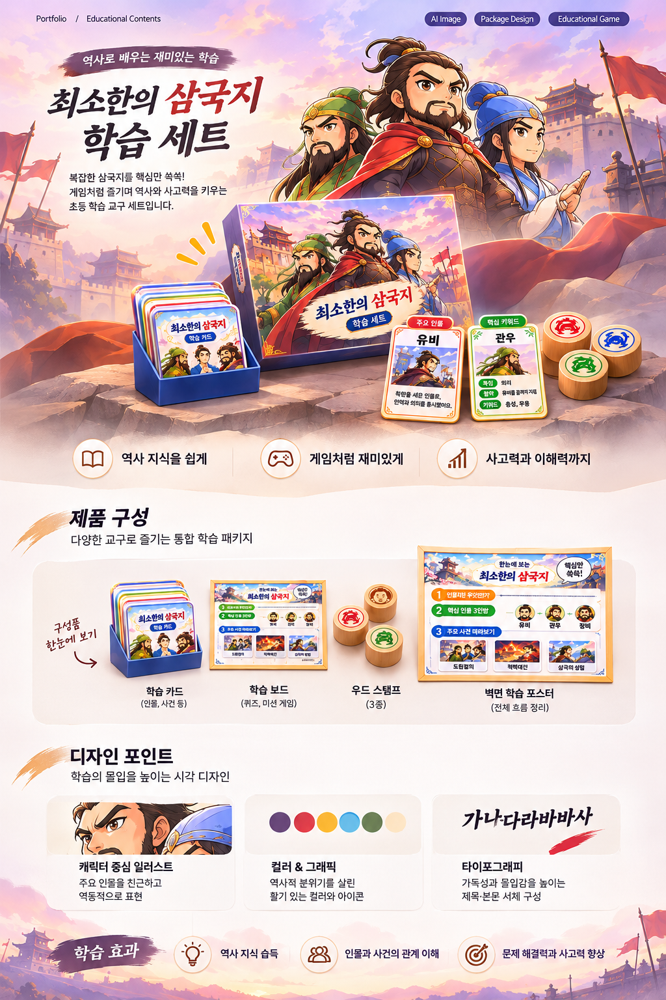

01
기획의도
중학교 2학년 학생이 어려운 삼국지의 인물과 사건을 쉽고 재미있게 이해하도록 시각적인 학습 자료를 제작했습니다.
AI CONTENT / PROJECT 01
복잡한 삼국지 이야기를 쉽고 재미있게 배우는 시각 학습 콘텐츠
중학교 2학년 학생이 어려운 삼국지의 인물과 사건을 쉽고 재미있게 이해하도록 시각적인 학습 자료를 제작했습니다.
등장인물과 사건이 많아 핵심 내용을 기억하기 어렵고, 한 장의 이미지에 많은 정보를 담으면 가독성이 떨어질 수 있었습니다.
핵심 사건 8개와 주요 단어 20개를 선정하고, 벽면 포스터와 개별 학습카드로 나누어 학습 목적에 맞게 디자인했습니다.
